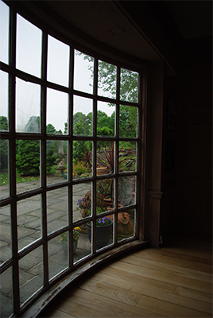
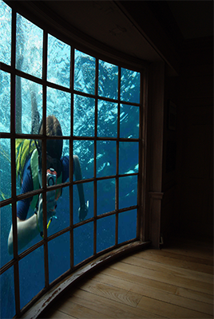
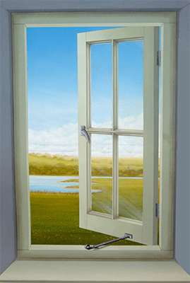
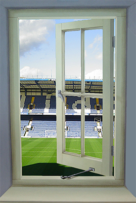

Find an image of a window with a view and, using Adobe Photoshop, replace the view of the window, with another image from the internet.
The image has to be bigger than 1600 pixels in both width and height.
Be sure to use masks.
Don’t flatten the image.
Save it as PSD and submit it to PolyLearn.
Meet the exercise criteria: 40%
Technique and Execution: 30%
Challenge: 20%
Aesthetic: 10%
 
Kristin Edwards, Autumn 2010, Ohio State
Felicia Hans, Autumn 2010, Ohio State
 
Jeffrey Pejsa, Autumn 2010, Ohio State